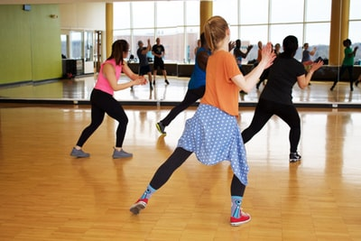
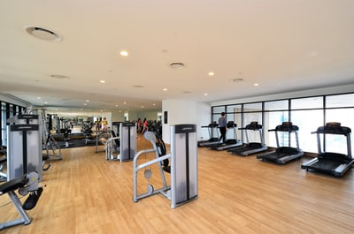
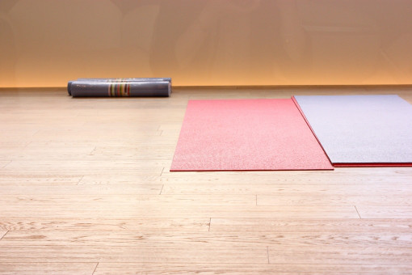

WORKS
― Studio Group Exercise ―

FITNESS CLUB ―フィットネスクラブ
エアロビクス、ステップエクササイズ、筋トレ、ストレッチなどのスタジオグループレッスン

PUBLIC FACILITY ―公共施設
日常生活に取り入れられる、姿勢改善や痛みの緩和予防のボディワーク、筋力アップトレーニングやストレッチ、リンパマッサージ、エアロビクスなど

WELFARE FACILITY ―福祉施設
高齢者、障がい者向けの軽体操、トレーニング、ストレッチ、音楽に合わせた有酸素運動など、椅子に座ったままでもOK